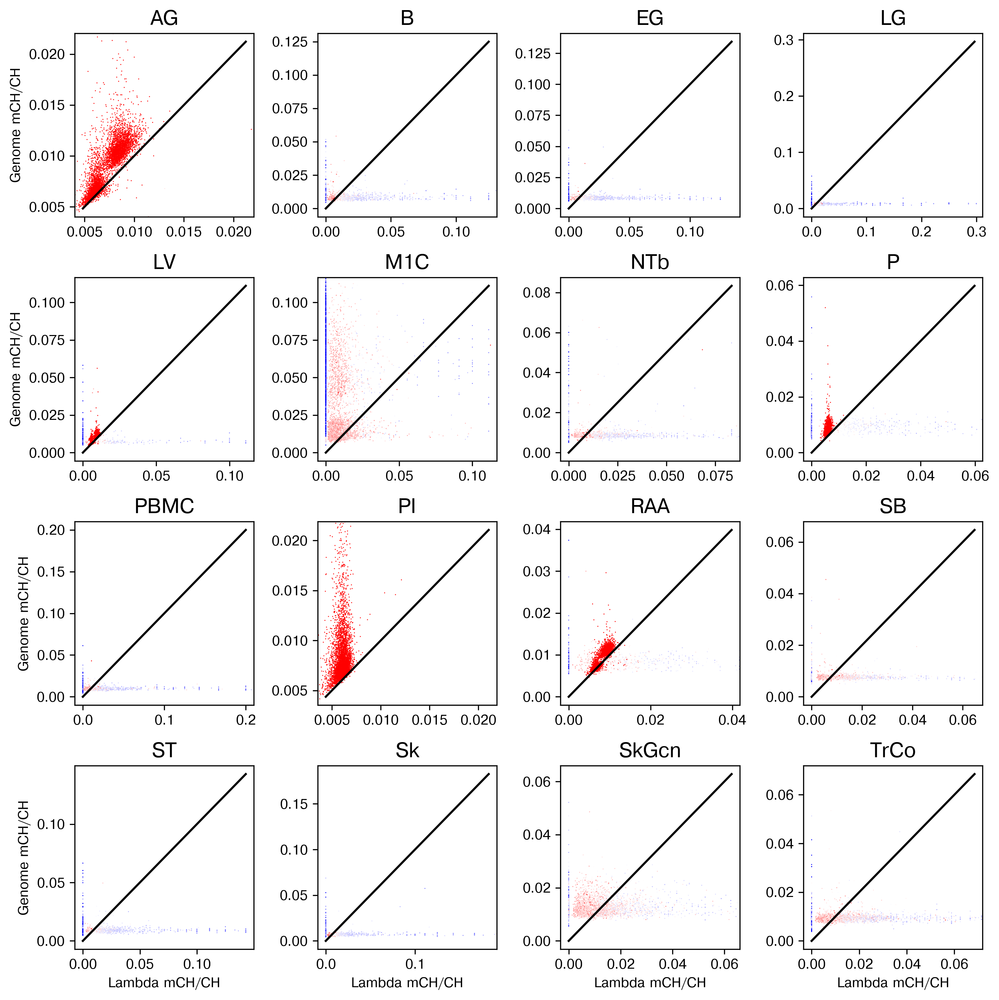
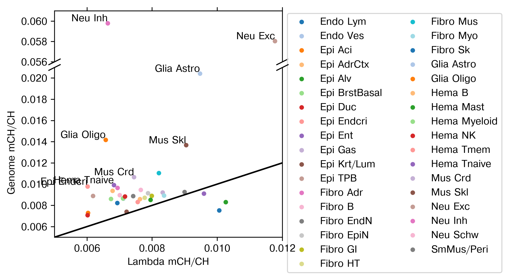

1. Global mCH#
Part of the Fig. 3 chapter — see it for the panel-by-panel map. The first code cell sets ENTEX_ROOT and activates the no-overwrite guard (see the Reproduction guide). Outputs shown are the author’s original run.
📥 Required input files#
This notebook reads the following files (paths resolve from ENTEX_ROOT/REF_ROOT; the setup cell sets them). See the chapter’s inputs.md for RAW-vs-derived tags.
f'{outdir}clustering/merged/L1pre/5kCG_lsi.h5ad'· raw embeddingf'{outdir}clustering/merged/L1/5kCG100k3C_embed.h5ad'· embedding h5adf'{indir}merged/ALL_lambda.csv.gz'· lambda control
# === Reproduction setup — edit ENTEX_ROOT / REF_ROOT for your machine ===
import os, sys
ENTEX_ROOT = os.environ.get('ENTEX_ROOT', '/large_storage/zhoulab/zhoujt/project/ENTEx')
REF_ROOT = os.environ.get('REF_ROOT', '/large_storage/zhoulab/ref')
BOOK_ROOT = os.environ.get('BOOK_ROOT', f'{ENTEX_ROOT}/analysis/HumanCellEpigenomeAtlas')
sys.path.insert(0, BOOK_ROOT)
os.chdir(f'{ENTEX_ROOT}/analysis') # original working directory
import repro_guard # no-overwrite guard (default: skip existing)
import numpy as np
import pandas as pd
import seaborn as sns
import matplotlib as mpl
import matplotlib.pyplot as plt
import anndata
import scanpy as sc
import scanpy.external as sce
from sklearn.preprocessing import normalize
from sklearn.decomposition import TruncatedSVD
from ALLCools.clustering import *
from ALLCools.plot import *
from ALLCools.integration.seurat_class import SeuratIntegration
mpl.style.use('default')
mpl.rcParams['pdf.fonttype'] = 42
mpl.rcParams['ps.fonttype'] = 42
mpl.rcParams['font.family'] = 'sans-serif'
mpl.rcParams['font.sans-serif'] = 'Helvetica'
def dump_embedding(adata, name, n_dim=2):
# put manifold coordinates into adata.obs
for i in range(n_dim):
adata.obs[f'{name}_{i}'] = adata.obsm[f'X_{name}'][:, i]
return adata
indir = '/data/ENTEx/'
outdir = '/mnt/disks/jupyter/home/jzhou_salk_edu/sky_workdir/ENTEx/'
tmp = anndata.read_h5ad(f'{outdir}clustering/merged/L1pre/5kCG_lsi.h5ad')
tmp
AnnData object with n_obs × n_vars = 86689 × 0
obs: 'batch', 'Plate', 'PCRIndex', 'MultiplexGroup', 'RandomIndex', 'Col384', 'Row384', 'R1InputReads', 'R1InputReadsBP', 'R1WithAdapters', 'R1QualTrimBP', 'R1TrimmedReads', 'R1TrimmedReadsBP', 'R1TrimmedReadsRate', 'R1UniqueMappedReads', 'R1DeduppedReads', 'R2InputReads', 'R2InputReadsBP', 'R2WithAdapters', 'R2QualTrimBP', 'R2TrimmedReads', 'R2TrimmedReadsBP', 'R2TrimmedReadsRate', 'R2UniqueMappedReads', 'R2DeduppedReads', 'CisShortContact', 'CisLongContact', 'TransContact', 'mCHmC', 'mCHCov', 'mCHFrac', 'mCGmC', 'mCGCov', 'mCGFrac', 'mCCCmC', 'mCCCCov', 'mCCCFrac', 'GenomeCov', 'FinalmCReads', 'CellInputReadPairs', 'R1MappingRate', 'R2MappingRate', 'R1DuplicationRate', 'R2DuplicationRate', 'CellBarcodeRatio', 'TotalContacts', 'CisShortRatio', 'CisLongRatio', 'TransRatio', 'Pool', 'Tissue', 'Sample', 'Donor', 'Protocol', 'Cis/Trans', 'tsne_0', 'tsne_1', 'Cluster', 'ClusterTissue', 'leiden', '5kCG_u50hm_leiden_0.5', '5kCG_u50hm_leiden_0.8', '5kCG_u50hm_leiden_1.0', '5kCG_u50hm_leiden_1.2', '5kCG_u50hm_leiden_1.6', '5kCG_u50hm_leiden_2.0', 'celltype'
obsm: '100k3C_pca', '100k3C_u35_tsne', '100k3C_u35hm', '100k3C_u35hm_tsne', '5kCG100k3C_u50u35', '5kCG100k3C_u50u35_tsne', '5kCG_pca', '5kCG_u50_seuratfilter60', '5kCG_u50_seuratfilter60_tsne', '5kCG_u50_tsne', '5kCG_u50hm', '5kCG_u50hm_tsne', '5kCG_u50sc', '5kCG_u50sc_tsne', 'X_lsi', 'X_pca', 'X_pca_harmony', 'X_pca_sc', 'X_tsne', 'lsi_all'
adata = anndata.read_h5ad(f'{outdir}clustering/merged/L1/5kCG100k3C_embed.h5ad')
adata
AnnData object with n_obs × n_vars = 86689 × 0
obs: 'FinalmCReads', 'mCHFrac', 'mCGFrac', 'CisLongContact', 'Cis/Trans', 'Donor', 'Tissue', 'celltype', 'ClusterTissue', 'tsne_0', 'tsne_1', 'leiden_cons', 'leiden_cv', 'L1'
obsm: '5kCG100k3C_u50pc50', '5kCG100k3C_u50pc50_tsne', 'X_tsne'
lam = pd.read_csv(f'{indir}merged/ALL_lambda.csv.gz', header=0, index_col=0)
lam
| mc | cov | ratio | |
|---|---|---|---|
| cell | |||
| AG_JF1NQ_AR_Plate10-1-I15-A13 | 1663 | 273311 | 0.006085 |
| AG_JF1NQ_AR_Plate10-1-I15-A14 | 2495 | 390789 | 0.006385 |
| AG_JF1NQ_AR_Plate10-1-I15-A1 | 1943 | 404006 | 0.004809 |
| AG_JF1NQ_AR_Plate10-1-I15-A2 | 1573 | 284916 | 0.005521 |
| AG_JF1NQ_AR_Plate10-1-I15-B13 | 1938 | 356929 | 0.005430 |
| ... | ... | ... | ... |
| TrCo_A9VP4_Plate8-6-J5-O24 | 0 | 10 | 0.000000 |
| TrCo_A9VP4_Plate8-6-J5-P11 | 2 | 115 | 0.017391 |
| TrCo_A9VP4_Plate8-6-J5-P12 | 2 | 479 | 0.004175 |
| TrCo_A9VP4_Plate8-6-J5-P23 | 0 | 2 | 0.000000 |
| TrCo_A9VP4_Plate8-6-J5-P24 | 0 | 4 | 0.000000 |
93550 rows × 3 columns
meta.groupby('Tissue')['cov'].mean().sort_values()
Tissue
LG 42.124317
Sk 69.026878
EG 92.588166
ST 139.705450
SkGcn 167.999282
TrCo 177.609836
M1C 188.945653
B 268.943952
NTb 293.576543
PBMC 294.667301
SB 1794.870558
LV 156774.371775
RAA 183522.280091
P 367416.452626
AG 499903.707733
PI 689529.581702
Name: cov, dtype: float64
leg = np.sort(meta['Tissue'].unique())
leg
array(['AG', 'B', 'EG', 'LG', 'LV', 'M1C', 'NTb', 'P', 'PBMC', 'PI',
'RAA', 'SB', 'ST', 'Sk', 'SkGcn', 'TrCo'], dtype=object)
fig, axes = plt.subplots(4, 4, figsize=(10, 10), dpi=300)
for xx,ax in zip(leg, axes.flatten()):
tmp = meta.loc[(meta['Tissue']==xx)]
# selc = (tmp['cov']>100)
# ax.scatter(tmp.loc[selc, 'ratio'], tmp.loc[selc, 'mCHFrac'], c='C0', s=0.5, edgecolor='none')
# ax.scatter(tmp.loc[~selc, 'ratio'], tmp.loc[~selc, 'mCHFrac'], c='C1', s=0.5, edgecolor='none')
cov = np.log10(tmp['cov']+1)
# cov[cov>np.percentile(cov, 99)] = np.percentile(cov, 99)
# cov[cov<np.percentile(cov, 1)] = np.percentile(cov, 1)
ax.scatter(tmp['ratio'], tmp['mCHFrac'], c=cov, cmap='bwr', s=0.5,
vmin=0, vmax=4, edgecolor='none')
# xlim, ylim = np.percentile(tmp['ratio'], [1,99]), np.percentile(tmp['mCCCFrac'], [1,99])
# ax.set_xlim([xlim[0]-0.001, xlim[1]+0.001])
# ax.set_ylim([ylim[0]-0.001, ylim[1]+0.001])
lim = [min([np.percentile(tmp['ratio'], 1), np.percentile(tmp['mCHFrac'], 1)]),
max([np.percentile(tmp['ratio'], 99), np.percentile(tmp['mCHFrac'], 99)])]
diff = 0.05*(lim[1]-lim[0])
ax.set_xlim([lim[0]-diff, lim[1]+diff])
ax.set_ylim([lim[0]-diff, lim[1]+diff])
ax.plot(lim, lim, c='k')
ax.set_title(xx, fontsize=15)
for ax in axes[:,0]:
ax.set_ylabel('Genome mCH/CH')
for ax in axes[-1]:
ax.set_xlabel('Lambda mCH/CH')
plt.tight_layout()

selcol = ['Tissue', 'Sample', 'Donor',
'Cis/Trans', 'CisLongContact', 'FinalmCReads',
'mCHmC', 'mCHCov', 'mCHFrac',
'mCGmC', 'mCGCov', 'mCGFrac',
'mCCCmC', 'mCCCCov', 'mCCCFrac']
meta = pd.concat([tmp.obs.loc[adata.obs.index, selcol], lam.loc[adata.obs.index]], axis=1)
meta['L1'] = adata.obs['L1'].copy()
meta
| Tissue | Sample | Donor | Cis/Trans | CisLongContact | FinalmCReads | mCHmC | mCHCov | mCHFrac | mCGmC | mCGCov | mCGFrac | mCCCmC | mCCCCov | mCCCFrac | mc | cov | ratio | L1 | |
|---|---|---|---|---|---|---|---|---|---|---|---|---|---|---|---|---|---|---|---|
| cell | |||||||||||||||||||
| M1C_3C_001_Plate1-1-F3-A2 | M1C | M1CA1 | H1930001 | 1.214015 | 312428 | 3090972 | 777325 | 52698636 | 0.014750 | 2045762.0 | 2684541.0 | 0.762053 | 28183 | 3694583 | 0.007628 | 0 | 50 | 0.000000 | Glia Oligo |
| M1C_3C_001_Plate1-1-F3-B1 | M1C | M1CA1 | H1930001 | 1.371837 | 204069 | 1995864 | 744272 | 33201595 | 0.022417 | 1336204.0 | 1720789.0 | 0.776507 | 22448 | 2248596 | 0.009983 | 2 | 92 | 0.021739 | Glia Oligo |
| M1C_3C_001_Plate1-1-F3-B13 | M1C | M1CA1 | H1930001 | 1.243364 | 550768 | 4906103 | 1134907 | 85148312 | 0.013329 | 3256105.0 | 4484117.0 | 0.726142 | 45457 | 6032379 | 0.007536 | 1 | 216 | 0.004630 | Hema Myeloid |
| M1C_3C_001_Plate1-1-F3-B14 | M1C | M1CA1 | H1930001 | 1.962490 | 452876 | 3369702 | 2431679 | 57446221 | 0.042330 | 2251533.0 | 2971885.0 | 0.757611 | 45682 | 4024233 | 0.011352 | 0 | 109 | 0.000000 | Neu Exc |
| M1C_3C_001_Plate1-1-F3-B2 | M1C | M1CA1 | H1930001 | 1.774154 | 589374 | 4373711 | 3203879 | 74285514 | 0.043129 | 2949948.0 | 3858604.0 | 0.764512 | 56451 | 5231765 | 0.010790 | 2 | 137 | 0.014599 | Neu Exc |
| ... | ... | ... | ... | ... | ... | ... | ... | ... | ... | ... | ... | ... | ... | ... | ... | ... | ... | ... | ... |
| Sk_IOBHT_AR_Plate7-6-I24-O12 | Sk | IOBHT | PT-1LGRB | 1.088724 | 186861 | 2276509 | 284305 | 40938406 | 0.006945 | 1519210.0 | 2111557.0 | 0.719474 | 15052 | 2935733 | 0.005127 | 0 | 0 | 0.000000 | Fibro Sk |
| Sk_IOBHT_AR_Plate7-6-I24-O23 | Sk | IOBHT | PT-1LGRB | 1.178620 | 326579 | 3279874 | 363886 | 56020850 | 0.006496 | 1943298.0 | 2762732.0 | 0.703397 | 19899 | 3943177 | 0.005046 | 5 | 854 | 0.005855 | Fibro Sk |
| Sk_IOBHT_AR_Plate7-6-I24-O24 | Sk | IOBHT | PT-1LGRB | 1.132499 | 244117 | 2692787 | 310511 | 46461072 | 0.006683 | 1691133.0 | 2362033.0 | 0.715965 | 16541 | 3336383 | 0.004958 | 0 | 0 | 0.000000 | Fibro Sk |
| Sk_IOBHT_AR_Plate7-6-I24-P12 | Sk | IOBHT | PT-1LGRB | 1.515191 | 297676 | 3157545 | 391001 | 56671264 | 0.006899 | 2051048.0 | 2829713.0 | 0.724825 | 20268 | 3993890 | 0.005075 | 0 | 40 | 0.000000 | Fibro Sk |
| Sk_IOBHT_AR_Plate7-6-I24-P24 | Sk | IOBHT | PT-1LGRB | 1.985868 | 344691 | 3017309 | 314052 | 52684620 | 0.005961 | 1986020.0 | 2731492.0 | 0.727082 | 18295 | 3846496 | 0.004756 | 0 | 27 | 0.000000 | Epi Krt/Lum |
86689 rows × 19 columns
mch_df = meta.groupby('L1')[['mCHmC', 'mCHCov', 'mc', 'cov']].sum()
mch_df['LambdamCHFrac'] = mch_df['mc'] / mch_df['cov']
mch_df['BulkmCHFrac'] = mch_df['mCHmC'] / mch_df['mCHCov']
mch_df['AvemCHFrac'] = meta.groupby('L1')['mCHFrac'].mean()
mch_df.sort_values('AvemCHFrac')
| mCHmC | mCHCov | mc | cov | LambdamCHFrac | BulkmCHFrac | AvemCHFrac | |
|---|---|---|---|---|---|---|---|
| L1 | |||||||
| Epi Duc | 187825752 | 26511367724 | 3031104 | 503382119 | 0.006021 | 0.007085 | 0.007072 |
| Epi Aci | 360726051 | 49176470203 | 5761649 | 954716955 | 0.006035 | 0.007335 | 0.007287 |
| Epi Krt/Lum | 554831733 | 74623341103 | 1891 | 261969 | 0.007218 | 0.007435 | 0.007396 |
| Fibro Sk | 457629775 | 60372946529 | 730 | 72530 | 0.010065 | 0.007580 | 0.007521 |
| Endo Lym | 191128659 | 23172920205 | 138237 | 19935942 | 0.006934 | 0.008248 | 0.008219 |
| Epi Alv | 525614691 | 63266863730 | 327 | 31856 | 0.010265 | 0.008308 | 0.008303 |
| Hema Tmem | 2808623481 | 336063154366 | 977690 | 129317675 | 0.007560 | 0.008357 | 0.008312 |
| Hema Mast | 420162729 | 49521406189 | 29112 | 3659490 | 0.007955 | 0.008484 | 0.008514 |
| Hema B | 1318449000 | 153468228572 | 52105 | 6830014 | 0.007629 | 0.008591 | 0.008586 |
| Epi BrstBasal | 432407161 | 50044680396 | 3789 | 562192 | 0.006740 | 0.008640 | 0.008603 |
| Endo Ves | 1719824479 | 196250102676 | 7645128 | 1073844177 | 0.007119 | 0.008763 | 0.008632 |
| Hema Myeloid | 2971855907 | 340646035323 | 3825033 | 538022524 | 0.007109 | 0.008724 | 0.008651 |
| Fibro HT | 1083694496 | 121585788206 | 4588864 | 590208721 | 0.007775 | 0.008913 | 0.008716 |
| Hema NK | 410350024 | 46184581856 | 77582 | 10820879 | 0.007170 | 0.008885 | 0.008831 |
| SmMus/Peri | 868737930 | 96652618300 | 1718403 | 231548387 | 0.007421 | 0.008988 | 0.008870 |
| Epi TPB | 1872107154 | 208911845213 | 11861496 | 1916637965 | 0.006189 | 0.008961 | 0.008884 |
| Fibro GI | 1407397435 | 157557074006 | 42595 | 5329421 | 0.007992 | 0.008933 | 0.008896 |
| Fibro Myo | 144767302 | 16055168083 | 384 | 45882 | 0.008369 | 0.009017 | 0.008919 |
| Neu Schw | 620925374 | 68537728692 | 741156 | 105743218 | 0.007009 | 0.009060 | 0.008958 |
| Epi Ent | 1333659392 | 146102561849 | 7142 | 744381 | 0.009595 | 0.009128 | 0.009105 |
| Fibro EpiN | 451815171 | 49512498707 | 10400 | 1320204 | 0.007878 | 0.009125 | 0.009144 |
| Epi Gas | 1495376486 | 164606708274 | 5339 | 641154 | 0.008327 | 0.009085 | 0.009209 |
| Fibro EndN | 774764924 | 83697391123 | 9692 | 1076869 | 0.009000 | 0.009257 | 0.009255 |
| Epi AdrCtx | 1282651928 | 137235930771 | 11501562 | 1694262854 | 0.006789 | 0.009346 | 0.009367 |
| Fibro B | 716486611 | 75939869284 | 3465 | 452652 | 0.007655 | 0.009435 | 0.009455 |
| Fibro Adr | 341016188 | 35286927133 | 2514579 | 362267934 | 0.006941 | 0.009664 | 0.009642 |
| Epi Endcri | 847102168 | 86213238902 | 10096100 | 1676742299 | 0.006021 | 0.009826 | 0.009770 |
| Hema Tnaive | 845897898 | 84764528987 | 12632 | 1849308 | 0.006831 | 0.009979 | 0.009907 |
| Mus Crd | 485008766 | 44825046557 | 1094659 | 146990578 | 0.007447 | 0.010820 | 0.010658 |
| Fibro Mus | 298610179 | 26881771208 | 927 | 112900 | 0.008211 | 0.011108 | 0.011038 |
| Mus Skl | 2251777811 | 164048885395 | 6063 | 670045 | 0.009049 | 0.013726 | 0.013673 |
| Glia Oligo | 1288072439 | 90953490382 | 24682 | 3752081 | 0.006578 | 0.014162 | 0.014165 |
| Glia Astro | 645593325 | 31475147653 | 2021 | 213316 | 0.009474 | 0.020511 | 0.020409 |
| Neu Exc | 6123519336 | 106191899993 | 4025 | 341797 | 0.011776 | 0.057665 | 0.058030 |
| Neu Inh | 3856027945 | 65096633274 | 19854 | 2989177 | 0.006642 | 0.059235 | 0.059778 |
from scipy.stats import binom
[binom.sf(m-1,n,p) for m,n,p in mch_df[['mCHmC', 'mCHCov', 'LambdamCHFrac']].values]
[0.0,
0.0,
0.0,
0.0,
1.0,
0.0,
0.0,
0.0,
1.0,
0.0,
0.0,
0.0,
0.0,
0.0,
0.0,
0.0,
0.0,
0.0,
0.0,
0.0,
1.0,
0.0,
0.0,
0.0,
0.0,
0.0,
0.0,
0.0,
0.0,
0.0,
0.0,
0.0,
0.0,
0.0]
fig, axes = plt.subplots(2, 1, figsize=(4,4), sharex=True,
gridspec_kw={'height_ratios': [0.9,3]}, dpi=300)
fig.subplots_adjust(hspace=0.05)
# sns.scatterplot(mch_df, x='LambdamCHFrac', y='AvemCHFrac', hue='L1', palette='tab20')
leg = np.sort(mch_df.index)
colordict = {xx:yy for xx,yy in zip(leg, sns.color_palette('tab20', len(leg)))}
ylim = [[0.056, 0.061], [0.005, 0.021]]
d = .5 # proportion of vertical to horizontal extent of the slanted line
kwargs = dict(marker=[(-1, -d), (1, d)], markersize=12,
linestyle="none", color='k', mec='k', mew=1, clip_on=False)
for k,ax in enumerate(axes):
for xx,yy in zip(mch_df.index, mch_df[['LambdamCHFrac', 'AvemCHFrac']].values):
ax.scatter(yy[0], yy[1], label=xx, c=colordict[xx], s=20, edgecolor='none')
ax.set_ylim(ylim[k])
if (yy[1]-yy[0]>0.003) & (yy[1]<ylim[k][1]) & (yy[1]>ylim[k][0]):
ax.text(yy[0], yy[1], xx, ha='right', va='bottom')
# ax.scatter(mch_df['LambdamCHFrac'], mch_df['AvemCHFrac'], label=mch_df.index.astype(str),
# c=mch_df.index.astype(str).map(colordict), s=20, edgecolor='none')
# lim = [0.001, 0.065]
ax.set_xlim([0.005, 0.012])
ax.set_xticks(np.arange(0.006, 0.013, 0.002))
# ax.set_ylim(lim)
ax.plot(lim, lim, c='k')
ax.set_ylabel('Genome mCH/CH')
ax.set_xlabel('Lambda mCH/CH')
ax.spines.top.set_visible(False)
ax.xaxis.tick_bottom()
ax.plot([0, 1], [1, 1], transform=ax.transAxes, **kwargs)
ax = axes[0]
ax.set_yticks(np.arange(0.056, 0.061, 0.002))
ax.legend(loc='upper left', bbox_to_anchor=(1,1.05), ncol=2)
ax.spines.bottom.set_visible(False)
ax.xaxis.tick_top()
ax.tick_params(labeltop=False) # don't put tick labels at the top
ax.plot([0, 1], [0, 0], transform=ax.transAxes, **kwargs)
# selc = (mch_df['AvemCHFrac'] - mch_df['LambdamCHFrac'] > 0.003) & (mch_df['AvemCHFrac'] < 0.025)
# print(selc.sum())
# for xx,coord in zip(mch_df.index[selc], mch_df[['LambdamCHFrac', 'AvemCHFrac']].values[selc]):
# ax.text(coord[0], coord[1], xx, ha='right', va='bottom')
# plt.tight_layout()
plt.savefig('global_mCH_celltype.pdf', transparent=True)
